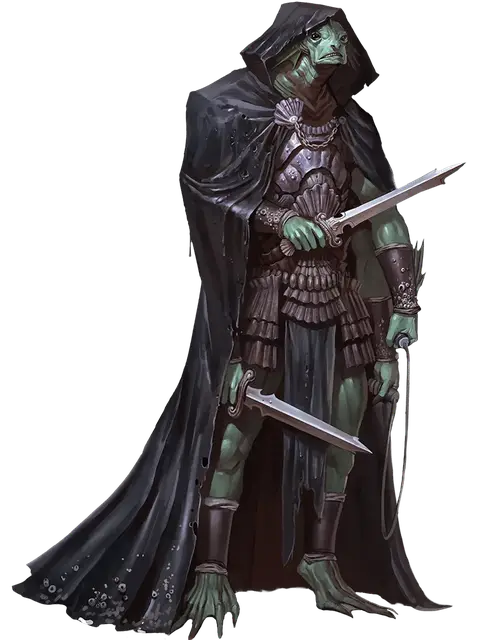

Гальд
Ghald
Большой Гуманоид (Сахуагин), законно-злой, именной НИП

Класс Доспеха 15 (природный доспех)
Хиты 102 (12к10 + 36)
Скорость 30 футов, плавая 50 футов
| мод | спас | ||
|---|---|---|---|
| СИЛ | 19 | +4 | +4 |
| ЛОВ | 17 | +3 | +6 |
| ТЕЛ | 16 | +3 | +6 |
| мод | спас | ||
|---|---|---|---|
| ИНТ | 14 | +2 | +5 |
| МДР | 13 | +1 | +4 |
| ХАР | 17 | +3 | +3 |
Навыки Восприятие +7, Проницательность +4
Чувства тёмное зрение 120 футов, пассивное Восприятие 17
Языки Общий, Сахуагинский
Опасность 7 (2900 опыта)
Бонус мастерства +3
Особенности
Ликвидация. Во время своего первого хода Гальд совершает с преимуществом броски атаки по тем существам, которые ещё не совершали ход в этом бою. Все попадания по существам, захваченным врасплох, считаются критическими.
Ограниченная амфибийность. Гальд может дышать и воздухом, и под водой, но, чтобы не задохнуться, ему нужно погружаться в воду хотя бы раз в 4 часа.
Акулья телепатия. Гальд может магическим образом командовать всеми акулами, находящимися в пределах 120 футов от него, при помощи ограниченной телепатии.
Скрытая атака. При попадании по цели атакой оружием Гальд наносит дополнительный урон 14 (4к6), если атака была совершена с преимуществом. Ему не нужно иметь преимущество при броске атаки, если союзник Гальда находится в пределах 5 футов от цели. Союзник не должен быть недееспособным, и у Гальда не должно быть помехи для броска атаки.
Действия
Мультиатака. Гальд совершает три атаки: одну укусом и две своими короткими мечами.
Укус. Рукопашная атака оружием: +7 к попаданию, досягаемость 5 фт., одно существо. Попадание: колющий урон 9 (2к4 + 4).
Короткий меч. Рукопашная атака оружием: +7 к попаданию, досягаемость 5 фт., одно существо. Попадание: колющий урон 11 (2к6 + 4).
Гаррота. Рукопашная атака оружием: +7 к попаданию, досягаемость 5 фт., одно существо Маленького или Среднего размера, если у Гальда есть преимущество при атаке этого существа. Попадание: дробящий урон 9 (2к4 + 4) и цель схвачена (Сл высвобождения 15). Пока цель не высвободится из захвата, она не может дышать, а Гальд совершает броски атаки по ней с преимуществом.
Описание
Четырёхрукий, восьми футов ростом сахуагин по имени Гальд работает вместе со своим товарищем Анфертом на общество Кракена в Яртаре. Он достаточно осторожен и не покидает своё тайное убежище под пристанью, если только на улице не стемнело и не идёт дождь, но даже тогда он носит большой, скрывающий фигуру плащ. Наряду с Анфертом он считается лучшим агентом общества Кракена в этой части Севера. При выполнении задач общества эти двое с удовольствием прибегают к запугиванию, кражам и убийствам.
Когда гильдия воров, известная как Рука Яртара, забирает себе могучее элементальное оружие (см. побочную сюжетную линию «Тёмные делишки в Яртаре» в главе 6), общество Кракена, стараясь не остаться внакладе, отправляет к ворам Гальда и Анферта. Эти двое позаботятся о посторонних, мешающих планам их работодателей.